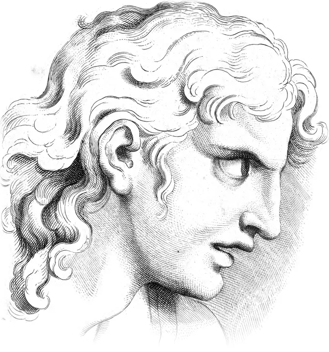
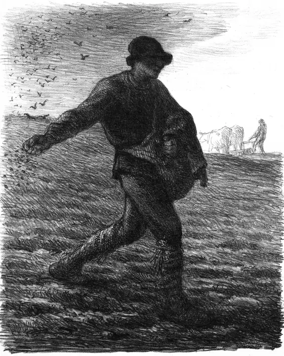
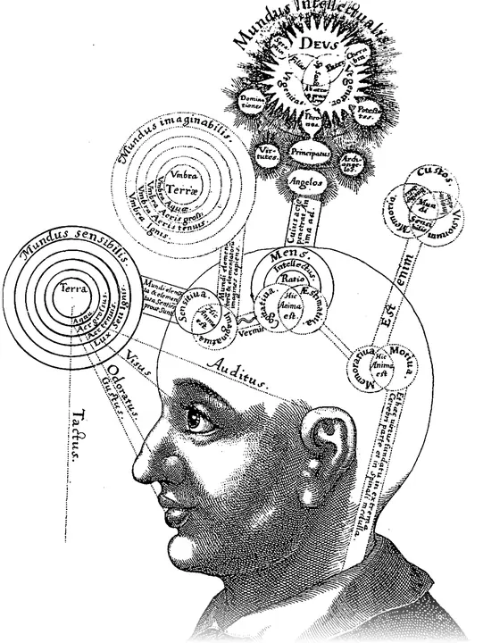

Um e-book pra fazer, não só pra ler. Cada dia tem uma prática curta e uma pergunta pra responder por escrito. Você testa as 21 e, no fim, escolhe as duas ou três que ficam com você.
O que dá pra observar ao longo dos dias é simples: perceber mais cedo quando a cabeça saiu, quando o corpo pediu pausa e quando a emoção tomou o volante.
Como funciona
três semanas, um dia por vez, na ordem

Semana 1 · dias 1–7
Atenção e respiração
Sentar, respirar e ficar numa coisa só. É a base das outras duas semanas.
Sentar e contar
Coluna reta
Soltar o ar devagar
Só pelo nariz
Uma coisa só
A espera sem celular
Dez minutos em silêncio

Semana 2 · dias 8–14
Corpo e emoção
Mexer o corpo, sair de casa e aprender a sentir sem ser arrastado.
Sair e andar
Soltar o corpo
Nem demais, nem de menos
Dez minutos de verde
Suspiro duplo
Dar nome
Passar pro papel

Semana 3 · dias 15–21
Direção e ação
Escolher de propósito, resolver sem alarde e dizer o que você pensa.
A pergunta do preço
O que depende de mim
Se… então…
Um problema pequeno, sem alarde
Cem por cento e solta
Uma frase verdadeira
A revisão da noite
Cada dia tem cinco partes
duas ou três páginas
01A ideiaO porquê do dia, com um texto antigo e a fonte.
02A práticaPassos numerados e a duração: de 2 a 10 minutos.
03Por que funcionaO estudo que existe, com autor, revista e ano. Quando não existe, o e-book diz.
04Se travarAs travas mais comuns e o que fazer: deu sono, deu agonia, não tenho dez minutos.
05Pra responder por escritoUma pergunta, linhas pra escrever e o quadradinho de feito.
No fim de cada semana tem uma página de revisão.
O que vem dentro
páginas de verdade do e-book
Um PDF de 60 páginas, em tamanho A5. Lê no celular ou imprime: cabem duas páginas por folha.
Antes de começar: pra quem é, como usar e o que fazer se pular um dia
Os 21 dias e as 3 revisões de semana
Depois dos 21 dias: como ficar com duas ou três práticas
Leituras e referências: os textos antigos e os 18 estudos citados
CapaDesafio Evolução Mental · 21 diasDia 13A ideia e a prática em passos
De tradições antigas da Índia (respiração, postura e atenção, como aparecem no Bhagavad Gita, nos Yoga Sutras e nas Upanishads), do Dhammapada, de Sêneca, e do que a psicologia e a neurociência já mediram.
Textos antigos
Toda citação tem a fonte
Bhagavad Gitacom o verso e a página da edição
Dhammapadacom o número do verso
SênecaCartas a Lucílio e Sobre a brevidade da vida
Yoga Sutras e Katha Upanishadem tradução livre, marcados como tal
Estudos
18 estudos, com autor, revista e ano
Killingsworth e GilbertScience, 2010 · a mente em outro lugar
Balban e colegasCell Reports Medicine, 2023 · respiração de saída longa
Lieberman e colegasPsychological Science, 2007 · dar nome à emoção
Lally e colegasEuropean Journal of Social Psychology, 2010 · quanto tempo leva um hábito
Você tem o direito de executar seu dever prescrito, mas não tem direito aos frutos da ação.
Bhagavad Gita 2.47 · no dia 19
Seis dias dizem com todas as letras que não têm estudo próprio. Ali ficam o texto antigo e o seu teste.
A física aparece três vezes, sempre como analogia: é comparação pra ajudar a visualizar, não prova de nada.
Pra quem é, e pra quem não é
É pra você
Se você quer começar pequeno
Vive no celular, anda sem energia ou sente que os dias estão passando no automático
Quer uma coisa por dia, com começo, meio e fim
Nunca meditou. Não precisa de experiência nem de tempo sobrando: alguns minutos por dia, papel e caneta
Não é pra você
Se você procura outra coisa
Tratamento. O e-book não é diagnóstico, não cura nada e não substitui médico nem psicólogo
Resultado garantido. O e-book não promete nenhum
Hábito pronto em 21 dias. No estudo citado, o tempo pra uma ação virar automática variou de 18 a 254 dias. Três semanas são o começo
Só leitura. Sem fazer a prática e sem escrever, não tem desafio
Perguntas frequentes
Em que formato vem?
Um PDF de 60 páginas, em tamanho A5. Dá pra ler no celular ou imprimir.
Quando eu recebo?
Na hora. Depois do pagamento você cai numa página com o botão pra baixar o PDF. Guarda o arquivo no celular.
Como eu pago?
Pix ou cartão. É pagamento único de R$ 97, sem mensalidade.
E se eu não gostar?
Você tem 7 dias, a partir da compra, pra pedir o dinheiro de volta. É o direito de arrependimento do Código de Defesa do Consumidor. Me chama no direct @conrado_desa com o e-mail da compra.
Não recebi o link. E agora?
Me chama no direct @conrado_desa com o e-mail da compra.
Preciso já ter meditado?
Não. O dia 1 começa do zero: cinco minutos sentado, contando a respiração.
Quanto tempo por dia?
De 2 a 10 minutos de prática, mais a leitura do dia e uma pergunta pra responder por escrito.
Pulei um dia. Perdi o desafio?
Não. Volta pro dia em que parou, sem recomeçar do zero e sem fazer dois de uma vez.
Isso substitui terapia ou tratamento?
Não. É conteúdo educativo sobre hábitos e bem-estar. Se você está em sofrimento, procure um médico ou psicólogo.